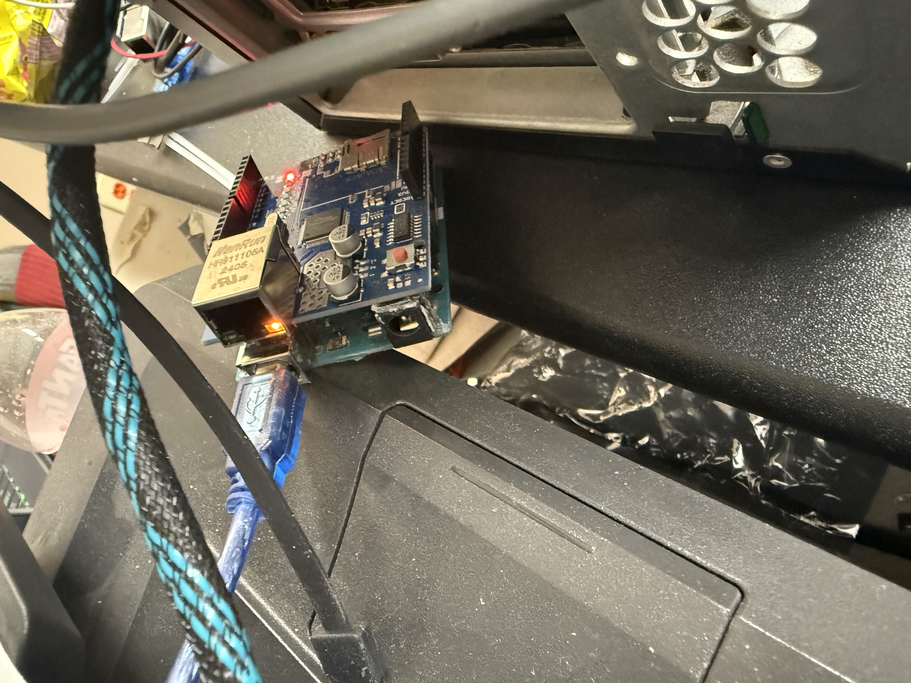
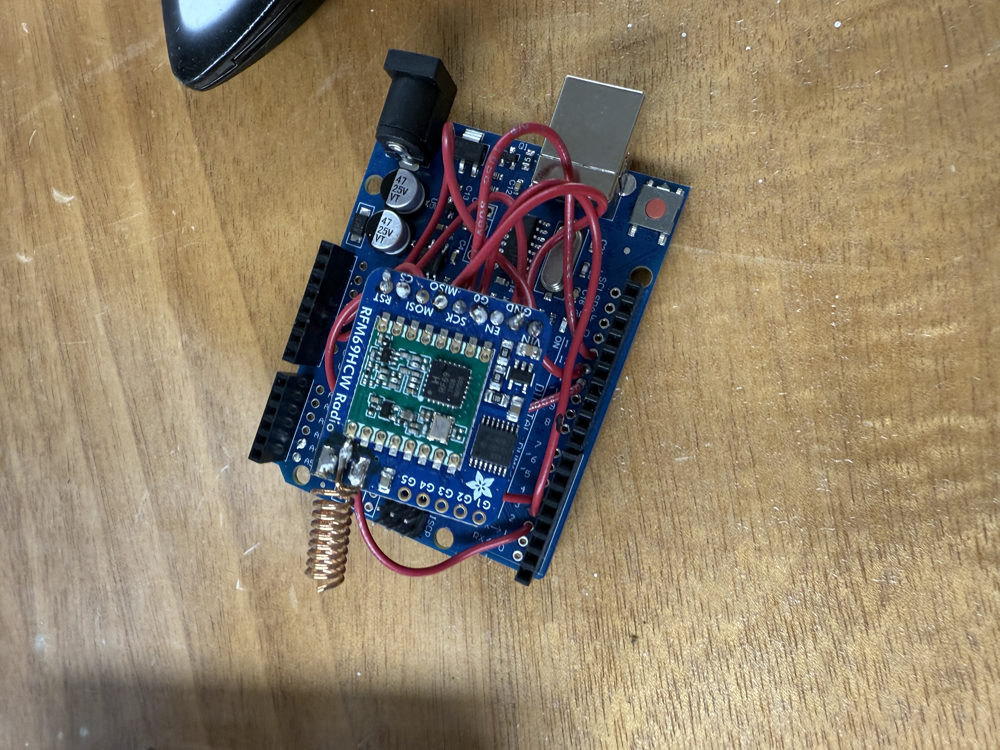

Data Forwarding with Two Arduinos
In this project, one Arduino receives LoRaWAN sensor packets and immediately forwards the parsed data to a second Arduino via I2C for cloud transmission.
Key Diagrams

Hardware & Setup
- RAK LoRa Hat + Arduino Uno
- Secondary Arduino Uno for Ethernet output
- Logic-level I2C connection (5V → 3.3V safe lines)
Key Code Snippet
// On the receiver Arduino:
void onReceive(int packetSize) {
String payload = LoRa.readString();
Wire.beginTransmission(0x42); // second Arduino address
Wire.write(payload.c_str());
Wire.endTransmission();
}
Sample Sensor Data
| Time | Temp (°C) | Humidity (%) |
|---|---|---|
| 12:00 | 22.4 | 48 |
| 12:05 | 22.6 | 47 |
Outcome
Added a single line (Wire.beginTransmission(0x42);) and the
I2C handshake resolved. The second Arduino now reliably pushes data
to the cloud within seconds of reception.